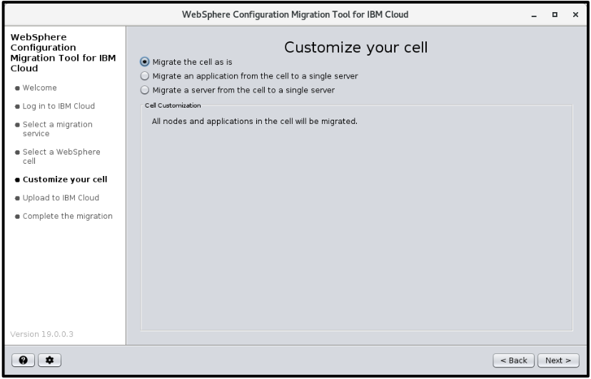
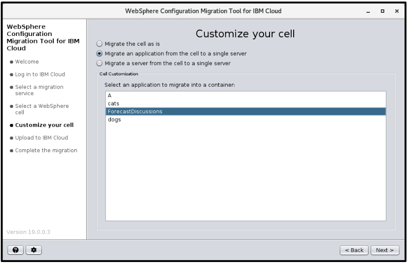
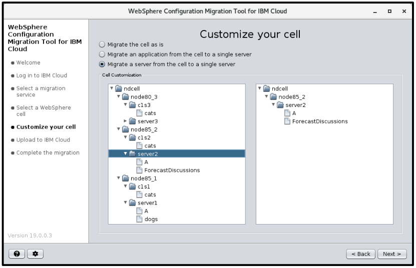

NEW for 19.0.0.1
- WCMT4IC now supports selecting a single application from a WebSphere Network Deployment cell and migrating it into its own standalone server running either in a Docker container or on the IBM Cloud!
Changes for 19.0.0.3
- IBM Public Cloud now requires logging in with an API key. Userid/passwords or a one-time passcodes are no longer supported.
- IBM Public Cloud only supports creating migration service instances using Resource Groups. Organization/Spaces no longer support creating migration services.
Migrating your traditional WebSphere environment can require extensive planning and coordination. Among the things to consider are your hardware and software needs, not only for your production environment, but also for your development, testing, and pre-production environments. And scheduling time to migrate each of these environments is not always easy. Now there is a tool to help get you started earlier as you plan your move to WebSphere V9.0. The WebSphere Configuration Migration Tool for IBM Cloud (WCMT4IC) provides an easy to use wizard for cloning your WebSphere V7, V8, V855 or V9 environment to the IBM Cloud or to your IBM Cloud Private installation.
With the industry focusing more and more on Cloud Native or modernizing your current applications, the WCMT4IC tool provides an easy migration option to help you “Lift and Shift” an application or your entire WebSphere cell to the cloud. Version 19.0.0.1 of the WCMT4IC tool introduced the capability to selectively migrate a single application deployed in your WebSphere cell into its own WebSphere standalone server. This standalone server can then be run on a virtual machine in the IBM Cloud (public or private) or be packaged into a Docker container ready for deployment into your IBM Cloud Private (ICP) environment. IBM’s Transformation Advisor tool shipped with ICP provides guidance by analyzing each application and recommending how and where each application should be migrated. In addition, the WebSphere admin console has been updated in fixpacks V8.5.5.16 and V9.0.0.11 to generate an application report showing whether the application can be migrated to Liberty.
If you have an IBM Cloud account with access to the WebSphere Application Server services or you have your own IBM Cloud Private installation with VM Quickstarter configured or if you would like to isolate an application into its own WebSphere standalone server running in a Docker container, then give this tool a try today.
The tool can be downloaded at no charge. Simply unzip it, and within a short time you can have a ‘clone’ of your existing cell running in the IBM Cloud on WebSphere V9.0 or have your selected application running in its own standalone server on the IBM Cloud or in a Docker container.
Follow this link for more information on GDPR readiness for this migration tool.
Migration basics for Traditional WebSphere
The goal of a traditional WebSphere migration is to provide a pathway forward to the features and functions of the new release while maintaining a stable environment. Selective Migration support became available in WCMT4IC 19.0.0.1, which allows the user to select a server or a single application from a Network Deployment cell and migrate it and its supporting configuration into its own standalone server. Whether you do a full cell or a selective migration, the process requires two main steps. First, the old configuration data is captured using the WASPreUpgrade command. Then it is merged into a target profile created in the new release using the WASPostUpgrade command. WebSphere migrations are done on a per-profile basis, therefore each node in the cell is migrated using the following process.
{kind=link}
In a ‘standard’ migration process, each node in the cell is disabled after it is migrated. However, in version V9.0 the clone option was introduced with the WASPostUpgrade command which allows the old cell to remain intact and completely functional both during and after the migration. In fact, when the migration completes both the old and new cells are completely independent and can run concurrently. Here are a few other benefits of using the clone migration option:
- No impact to your existing WebSphere environment.
- Minimal or no downtime for your production environment.
- Allows you to work out your migration issues: clone, test, throw away, repeat.
- Clone the same cell multiple times for use by different teams.
- No weekend or weeknight scheduled outages for migration.
An additional migration option that should be mentioned is the ability to migrate from one machine to another. The WASPreUpgrade command’s machineChange option causes the process to capture additional configuration data; e.g. shared libraries. Combining this option with the clone option achieves even further isolation between the old and new environments.
Selective Migrations
{kind=link}
Traditionally WebSphere migrations only permit a profile to be migrated into the same profile type in the new environment. However, selective migrations allow an application or a server from a Network Deployment cell to be migrated into its own standalone server. This capability is only available when using the WCMT4IC tool. It is not available when doing an on-prem to on-prem migration.
Going to the Cloud?
{kind=link}
Whether you migrate your WebSphere environment to your own IBM Cloud Private installation or to IBM’s public cloud, the WebSphere Configuration Migration Tool for IBM Cloud (WCMT4IC) allows you to start evaluating WebSphere V9.0 today. Combining the machineChange and clone options, this tool simplifies migrating your WebSphere environment to the IBM Cloud. No waiting for hardware setup or software installations. Once the WebSphere cell has been provisioned in the ‘cloud’, keep the virtual machines for as long as you need. When done, simply deleted the service instance. Or keep it around as your new production environment. The remainder of this article provides an overview of the on-premises-to-IBM Cloud migration wizard and the on-premises-to-Docker migration wizard.
Going to Docker?
{kind=link}
Use WCMT4IC to produce the build artifacts necessary to create a Docker image containing a WebSphere standalone server running your selected application. Building, running and deploying your Docker image is done independently of the WCMT4IC tool. Docker migrations do not support WebSphere full cell migrations.
Getting, installing, and running the tool
The WebSphere Configuration Migration Tool for IBM Cloud (WCMT4IC) can be downloaded for free. Once downloaded, simply unzip it to a directory of your choice. Ensure that you prepend your Java installation’s bin directory to the system path. Java version 8 or higher is required to run the wizard and the WASPreUpgrade command which is invoked by the wizard when processing local WebSphere nodes. Once the system path is set, change directory to where the tool was unzipped and use the following command: java -jar CloudMigration.jar. When you run the tool for the first time you will be prompted to set the language and to read and accept the license agreement.
The first panel displayed after initial setup is the wizard selection panel. You may choose between the IBM Cloud (Virtual Machine) wizard or the Docker (Container) wizard.
{kind=link}
The “Welcome” panel for each wizard gives you an overview of its process. Although each wizard has its unique steps, there are a couple common panels which help guide you in selecting what will be migrated from your current WebSphere cell into the final target environment.
A few other common items displayed by both wizards:
- The left-side of the window displays a checklist of the main steps for phase one and indicates which step you are on.
- In the bottom-left is a help and a preference button. If you press the help button, a separate window pops up giving you information about your current window. This help page remains synchronized as you advance through the wizard. The preference button allows you to change your language setting, after which you will need to restart the tool.
{kind=link}
Preparing your WebSphere cell for migration to the IBM Cloud
Before performing any migration to the IBM Cloud, complete a few minor tasks — especially if you are migrating a Network Deployment cell. Be sure that all nodes are synchronized with the Deployment Manager. Be sure that certificates are valid, up-to-date and exchanged with the federated nodes. Clean up any errant or unused variables, unused data sources, and any other general housekeeping items that are specific to your WebSphere environment. As the on-premises-to-IBM Cloud migration process is highly automated, these steps help reduce the possibility for errors during the provisioning process, which includes invoking the WASPostUpgrade command.
For an overview of a particular wizard click on its corresponding link:
Docker (Container) wizard
Welcome page
The Welcome page for the Docker wizard gives a brief overview of the two phases involved in migrating an application from its current WebSphere cell into its own standalone server. The first phase helps you produce the build artifacts needed to build the docker image, which includes:
- selecting a WebSphere cell.
- deciding which application to migrate.
- producing the docker build artifacts,which include the migration backup directory, a migration properties and a Docker File.
- providing additional steps on how to build your docker image and optionally deploy it to the Cloud.
The second phase is where you will build your Docker image. You can then run the Docker image locally or deploy it to an ICP environment.
Select a WebSphere Cell page
The wizard interrogates the system for all WebSphere Application Server installations. They are displayed in the top table and identified by the installation path and its WebSphere version. Versions older than 7.0 are not displayed as they cannot be migrated to version 9.0. If an installation is not listed, use the Locate button to browse to its folder, select it and confirm that you want to add it to the list. The Locate dialog not only allows you to find an installation on the current system, but it can also be used to process a profile location from a different machine. See the Processing data from a different machine locally section below for more details.
{kind=link}
Selecting an installation from the top table, causes the bottom table to be populated with a list of valid server profiles created under that installation. Only those profiles which manage a cell are listed. These profiles have a type of either: StandAlone Application Server or Deployment Manager. In addition to the profile‚Äôs name and type, the table also displays the name of the WebSphere cell being managed. Federated node profiles are processed later during the “generate build artifacts” process for Docker. Once you have selected the managing profile of the cell to be migrated, click Next which moves you forward to the ‚ÄúCustomize your Migration‚Äù page.
Customize your Docker Migration
Customizing a migration in the Docker wizard allows you to select a single application to migrate to its own standalone server. When migrating to WebSphere standalone server running in a Docker container the profile, cell, node and server names will all be reset to the default names as provided by the default Base WebSphere Docker image.
{kind=link}
Generate Docker Build Artifacts
On this page, you will proceed through a set up steps to generate the build artifacts which include:
- Dockerfile
- migration.properties
- Migration backup directory
The first step is to create the migration backup directory for the node containing the selected application to be migrated. If WebSphere global security is enabled you will be prompted for the userid and password. When clicking Migrate for a local node, the wizard automatically collects and archives the data locally. For a remote node, the wizard provides you with instructions, which are covered in the Processing data from a different machine locally section below. Step two allows you to save the node’s migration backup data along with the two other Docker build files to a directory of your choice. Step three allows you to review the generated files. You may tailor the Dockerfile and the migration.properties files, but do not change what is in the “migr” directory.
After the files are generated click Next to proceed to the final page.
Docker Final page
This page provides additional instructions in getting your application running in a Docker container deployed in an ICP environment. However, you can choose to build your Docker image and run it on your local machine. The WebSphere WASPostUpgrade command is run as part of the Docker build process. WASPostUpgrade migrates the data collected in the “migr” directory into the standalone server provided in the default Docker image. Therefore, the profile, cell, node and server names are reset to those provided by the default Docker image. Once the Docker images has been built, it can be distributed to developers and testers or deployed to an IBM Cloud environment.
{kind=link}
IBM Cloud (Virtual Machine) wizard
Welcome page
The Welcome page for the IBM Cloud wizard gives a brief overview of the two phases involved in migrating your WebSphere cell to the IBM Cloud. Each phase is associated with a graphical user interface which you will use to complete certain parts of the migration process. The first phase uses the IBM Cloud migration wizard and the second phase uses the IBM Cloud user interface for provisioning WebSphere Application Servers.
{kind=link}
Phase one guides you:
- in obtaining a WebSphere service instance from the IBM Cloud installation.
- in selecting the WebSphere cell, you want to migrate and assign it to the service.
- in deciding whether to do a full migration or a selective migration of an application or server.
- in finding, collecting, encrypting and uploading each node’s configuration data to a temporary staging location, which is only accessible by the migration service created.
- by providing additional steps on how to provision your virtual machines and complete the final steps of your migration.
Applying these phases to the basic migration process explained earlier we get the following diagram:
{kind=link}
The green oval on the left represents phase one or the work done by the WCMT4IC IBM Cloud wizard. The purple oval on the right represents phase two or the work done by the IBM Cloud WebSphere provisioning service. The dotted blue box in the middle is a temporary storage location for the encrypted configuration migration data needed to complete phase 2.
Login page
Use the ‘Product:’ field to select whether you will be migrating to IBM Cloud (public) or IBM Cloud Private. Both products are supported by the wizard, however, there is a slight variation to the Login process depending on the product selected.
{kind=link}
- IBM Cloud (public)
You need an IBM Cloud account with access to the WebSphere Application Server services to run this wizard. On the login page, select a region from the drop-down list. The list contains the four main IBM Cloud regions. However, the field also allows you to enter the URL for any specially configured regions. Once the region is selected, provide your API key or point to the JSON file containing your API key. You can generate a new API key by following the link provided on the login page. Once the API key is provided, click Next to proceed to the next step of the migration process.
- IBM Cloud Private
Contact the administrator of your company’s IBM Cloud Private installation to set up proper access to your installation’s WebSphere services. In the location field, enter in the proper URL for accessing the WebSphere service. It may look something like the following example: 10.166.69.23/my-wasaas-broker/ . Enter your userid an password and push ‘Log in’. You may need to temporarily accept a certificate for the duration of this connection. Click Next to proceed to the next step of the migration process.
Select Migration Service page
After logging in, the wizard proceeds to the WebSphere migration service selection page. Select a resource group from the dropdown list. If you only have one resource group, the wizard automatically proceeds to display a list of all your un-provisioned WebSphere service instances defined under that Resource Group. It is possible to have an empty service instance list. Use the ‚ÄòNew‚Äô button to request the creation of a new WebSphere service instance. In the pop-up, provide a unique name for the instance and select the appropriate Environment. Use the default selection if you are unsure of the Environment name. New instances are added to the list and tagged with a “Will be created” ID. The new service instance is created later when you select and confirm what you want to migrate. (Note: At any time, you can see a list of all your service instances using the IBM Cloud UI and going to your dashboard. From there you can see the status of each WebSphere service instance. You may also delete instances using the dashboard.)
{kind=link}
It is also possible for the list to contain one or more service instances. These service instances are in the list because they are un-provisioned. They may already be bound to a WebSphere cell. If you select a new (Will be created) or an un-bound service instance, clicking the Next button proceeds to the “Select a WebSphere Cell” page. If you select a service instance that is already bound to a WebSphere cell, clicking the Next button proceeds to the “Upload to IBM Cloud” page. This later path allows the wizard to support migrating cells where the WebSphere nodes are located across multiple machines. The WCMT4IC can be exited and restarted on a different machine to finish uploading nodes in the cell which are on different machines.
Select a WebSphere Cell page
This page is only displayed if a new service instance is being created. The wizard interrogates the system for all WebSphere Application Server installations. They are displayed in the top table and identified by the installation path and its WebSphere version. Versions older than 7.0 are not displayed as they cannot be migrated to version 9.0. If an installation is not listed, use the Locate button to browse to its folder, select it and confirm that you want to add it to the list. The Locate dialog not only allows you to find an installation on the current system, but it can also be used to process a profile location from a different machine. See the Processing data from a different machine locally section below for more details.
Selecting an installation from the top table, causes the bottom table to be populated with a list of valid server profiles created under that installation. Only those profiles which manage a cell are listed. These profiles have a type of either: StandAlone Application Server or Deployment Manager. In addition to the profile‚Äôs name and type, the table also displays the name of the WebSphere cell being managed. Federated node profiles are processed later during the “Upload” process. Once you have selected the managing profile of the cell to be migrated, click Next to be advanced the the Customization page.
Customize your Migration page
For the IBM Cloud wizard, this page is only displayed if a new service instance is being created. There are three “Customize Your Migration” options:
- Do a full cell migration.
 - Migrate a single application.
 - Migrate a server with its applications.

{kind=link}
{kind=link}
{kind=link}
The first option provides and exact “clone” of your current cell running WebSphere v9 on virtual machines in the IBM Cloud. It preserves all your configuration and deploys all the applications from your old cell. Your old cell remains fully functional. Options 2 and 3 belong to the selective migration process. Although these can be run against a standalone server, they are provided for extracting an application or a set of applications running on a server from a Network Deployment cell. Option two allows you to migrate a single application from a Federated Node into its own standalone server. Option three is similar but allows you to migrate all applications deployed on a server from its Network Deployment cell into its own standalone server. Once you have made your selection click Next to proceed to the Upload page. A confirmation popup asks if you want to proceed.
{kind=link}
Answering Continue causes a service instance to be created and bound to this WebSphere cell. If you need to reset an IBM Cloud migration, simply go to the IBM Cloud UI and delete this service instance, then restart the wizard. Answering Continue also moves you forward to the Upload page.
Upload to IBM Cloud page
You can arrive at this page either by creating a new instance and assigning it a WebSphere cell or by selecting an existing service instance which has not started its provisioning process. Each node in the WebSphere cell is listed on this page with its name, location (machine name or IP address), whether it is local or remote, whether the node’s data has been uploaded (green checkmark) and a Migrate button. The local/remote indicator identifies whether the node’s config data is found on the same machine on which the wizard is currently running.
{kind=link}
Clicking Migrate for local nodes cause the wizard to automatically run the WASPreUpgrade process to collect and archive the data locally before it is uploaded. Clicking Migrate for remote nodes causes the wizard to present a dialog with two options:
- The easy option: Install the wizard on the “remote” machine, start it and select the correct service instance. This should take you to the ‚ÄúUpload to IBM Cloud‚Äù page, you will find that this node, which was “remote” on the other machine is now local. Click Migrate.
- The manual option: or processing the remote node locally. This process is covered by the Processing data from a different machine locally section below.
The configuration data is encrypted before it is uploaded to the temporary location. It is only accessible by the WebSphere service instance to which it is bound. The data is deleted when the provisioning process completes, or when the WebSphere service instance is deleted.
When performing a selective migration you will only need to upload the recommended node to the temporary location. Later, during the provisioning process you will select the “Single Server” option instead of “Traditional Cell” to complete the migration.
WebSphere security
If security is enabled, you will be prompted for your WebSphere admin userid and password.
{kind=link}
The on-premises-to-IBM Cloud migration process disables WebSphere global security for all security configurations except when configured to use “file-based WIM user registry” only. This is because the virtual machines are completely isolated from the internet when being provisioned. For example, if your security configuration involves an LDAP server, the provisioning process cannot connect to it during the WASPostUpgrade process. Therefore, global security must be disabled so that the migration can complete. Once the virtual machines are provisioned security can be re-enabled, but may require additional set up work to enable the new virtual machines to access the on-premises LDAP server.
Application Scanning
Applications are installed ‘as-is’ during the WASPostUpgrade process. Although WebSphere supports applications that run on previous versions of WebSphere, there are always differences that must be tested. As a convenience, the wizard produces an application migration report for applications moving from the older WebSphere releases to version 9.0. This report gives a preliminary look at what application migration issues need to be investigated and handled. A link to this report is provided on the final page of the IBM Cloud wizard.
When all nodes are uploaded click Next to proceed to the final page.
Final page
If you have not uploaded all nodes, the final page lets you know which nodes have not been uploaded and on which machine they are located. Click the Back button to continue uploading any local nodes or click Finish to exit. For remote nodes which have not been uploaded, simply install this wizard on those machines to complete the uploads. No need to return to the original machine, you can complete the migration from where the final upload occurs.
{kind=link}
When all nodes are uploaded, the final page presents a checklist of required and optional steps. The only required step is to provision your service instance using the IBM Cloud UI. A link to the provisioning page of this service instance is provided by the wizard. See Provisioning the IBM Cloud Host Machine section below for more information.
{kind=link}
The optional steps include:
- Re-enabling security
- Migrating applications, including a link to the binary scanner report
- Setting up a Secure Gateway Service
- Setting up a Web Server
Each optional step provides you with resources to get your cloned IBM Cloud WebSphere cell working as it did on-premises. Please note that your new WebSphere cell is a clone and therefore may have access to the same databases, queues, topics, and other resources. Therefore, before starting any application analyze any other configuration changes you may need to make. Be aware that a limited number of ports have been opened for sending and receiving data on these IBM Cloud host machines. Open any additional ports as needed.
Processing data from a different machine locally
It is not necessary to process a WebSphere installation or upload a node from its local machine. An entire WebSphere cell can be processed remotely on a machine that does not even have WebSphere installed. This is ideal for situations where this wizard cannot be run on those machines or you do not wish to impact performance. Remote processing is always done at a profile level, even for the scenario where you are processing an installation from the ‚ÄúSelect a WebSphere Cell‚Äù page. To view the remote processing dialog from that page, click the Locate button, then select the “Install from an installation on another system” radio button. This brings up a similar dialog to the one that pops up when clicking the Migrate button for a remote node on the ‚ÄúUpload to IBM Cloud‚Äù page.
{kind=link}
The first and the easiest option is to install this tool on the other system. The second option requires a series of steps, but is not too difficult:
- On the system running the wizard create a
WASPreUpgradeutility. - Send the utility to the remote system and unzip it to a directory of your choice.
(Note: Unzipping theWASPreUpgradeutility on Unix systems requires a chmod +x -R on the WASPre/bin directory.) - Copy the suggested command from the wizard which will collect the profile’s data. (Note: from the install dialog, the profile location is unknown, whereas for the node migration the location is supplied in the suggested command.)
- Zip up the config backup directory
- Send it back to the system where the wizard is running.
- Browse to the location of the zip file and choose it. Depending on where this dialog was initiated it will:
- add it to the install list on the “Select a WebSphere Cell” page.
- begin uploading the data on the “Upload to IBM Cloud” page.
Provisioning the IBM Cloud host machine (Phase 2)
The wizard has uploaded all the cell‚Äôs information to the service instance. Now it is time for phase two or the provisioning process. This is controlled by the IBM Cloud’s (Public or Private) provisioning user interface. A link to this web page is provided on the final page of the WCMT4IC wizard. It should look similar to the following:
{kind=link}
If the incorrect number of nodes have not been uploaded the provisioning process will be blocked. Once the provision button is pressed the process may take some time depending on the number of nodes and the number of applications. Although the status indicator may be at 99%, the migration process may still be underway. When the provisioning process is complete you are taken to a consumer portal page. This page gives you instructions on how to access you WebSphere cell in the IBM Cloud. Be sure to follow the OpenVPN installation and configuration instructions. The migration process starts the Deployment Manager server and the node agents on the federated nodes. It does not start the application servers. However, for standalone migrations the server is started. You should be able to access the Admin Console from the Consumer Portal page once your OpenVPN is configured properly and started.
Summary
Whether you are doing a full migration to the IBM Cloud or a selective app migration to a Docker image, the WebSphere Configuration Migration Tool for IBM Cloud provides a variety of options in helping your organization prepare to migrate to WebSphere V9.0. The ability to clone multiple times, to easily reset and start fresh, to avoid the hassles of hardware setup and software installations reduces the complexity of your migration planning. Combining the WebSphere V9.0 migration enhancements with the convenience of the IBM Cloud can give you an edge up in your next migration efforts and in your modernization efforts.
Great article. However, it would be very much appreciated if more images/screenshots could go along with the migration process explained in the article. That is, prepend each of the migration steps with the corresponding image/screenshot of the wizard (or any other artefact) that is being explained.
Thanks
Thanks for your input. The article has been updated to reflect the changes to version 19.0.0.3.
Additional screen shots have been included for clarity.